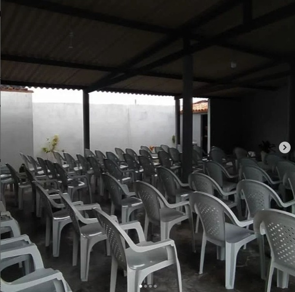
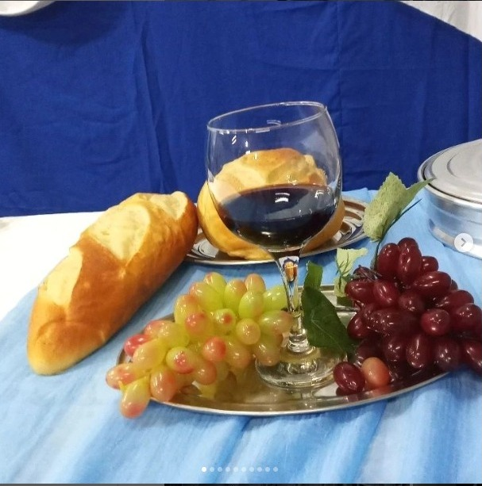

Um pouco sobre:
A Igreja Mensageiros da Verdade de Cristo tem em seu nome a sua principal missão: levar a verdade aos corações dos seus fieis e ao mundo. Os seus líderes são comprometidos com as sagradas escrituras, e trabalham diariamente para que a palavra de Deus possa ser disseminada em cada canto. Uma particularidade da Igreja são os seus dois músicos, que se dedicam a trazer uma atmosfera de paz e reflexão através dos seus talentos nas artes musicais. O tecladista e o violonista trabalham incansavelmente para que os louvores e músicas sejam um momento de conexão com o divino, reforçando os valores pregados em cada culto.